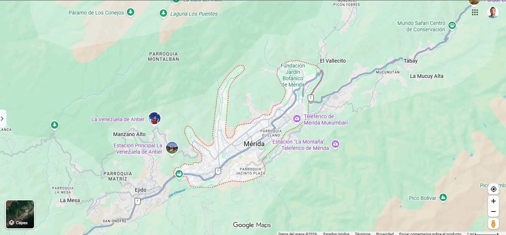

La CIUDAD es el lugar urbano (casas, calles, plazas). No es un nivel oficial aparte: está dentro del municipio.
La ciudad de Mérida está en el Municipio Libertador, en un valle andino. El municipio es más grande que una sola parroquia.
Nombre completo histórico: Santiago de los Caballeros de Mérida.
En el mapa: identifica la ciudad, marca un hito y nombra pueblos/áreas vecinas.
1. ¿Qué nivel es la ciudad de Mérida?
2. La ciudad está en un…
3. Hito famoso de la ciudad:
4. Ejido es un vecino…
5. Tabay queda al… de Mérida
6. En el mapa, módulo de la ciudad: ______
7. ¿La ciudad es capital del estado Mérida?
8. Parque Los Aleros está cerca de…
9. La ciudad fue fundada en…
10. ¿Cuál es un vecino del valle de Mérida?
11. El centro histórico se llama también…
12. La ciudad está dentro del estado…
